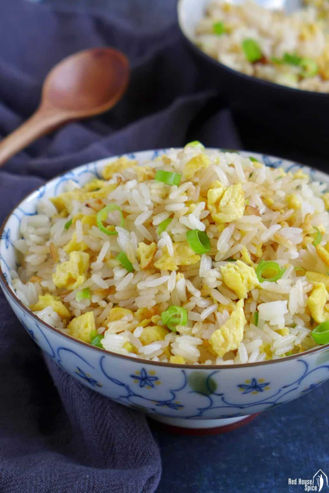

Egg Fried Rice

Description
Egg fried rice is a popular and flavorful dish
in many Asian cuisines, particularly Chinese.
It is made by stir-frying pre-cooked rice with
ingredients like eggs, vegetables (such as peas,
carrots, and green onions), and often soy sauce for
seasoning. The dish is known for its simplicity,
speed of preparation, and versatility, making it a
common choice for a quick and satisfying meal. The
combination of fluffy rice, scrambled eggs, and savory
flavors from the vegetables and seasonings creates a
delicious and comforting dish.
Ingredients
- Cooked Rice
- Eggs
- Vegetables ( like peas, carrots, corn, diced peppers )
- Soy sauce
- Green onions
- Garlic, minced (optional)
- Ginger, grated or minced (optional)
- Salt and pepper
Steps:
-
Preparation: If you haven't done so already, cook the rice
and allow it to cool or use leftover chilled rice. Chilled
rice works best for fried rice as it helps prevent clumping.
- Whisk Eggs:
In a bowl, whisk the eggs together with a pinch of salt and pepper.
-
Stir-Fry Vegetables:
Heat a wok or large skillet over medium-high heat. Add 1 tablespoon of oil.
Add the mixed vegetables and stir-fry for 2-3 minutes until they are slightly tender. Remove the vegetables from the pan and set them aside.
-
Cook Eggs:
In the same pan, add the remaining 1 tablespoon of oil.
Pour in the whisked eggs and let them cook for a moment without stirring.
Once the edges start to set, gently scramble the eggs until fully cooked.
-
Combine Rice:
Add the chilled or day-old rice to the pan with the cooked eggs. Break up any clumps and mix well.
-
Add Vegetables:
Return the stir-fried vegetables to the pan with the rice and eggs. Mix everything thoroughly.
-
Season with Soy Sauce:
Pour soy sauce over the rice and stir to evenly distribute the sauce. Adjust the amount according to your taste.
-
Finish with Green Onions:
Add chopped green onions to the fried rice and stir. Reserve some for garnish if desired.
-
Adjust Seasoning:
Taste the fried rice and adjust the seasoning with salt, pepper, or additional soy sauce as needed.
-
Serve:
Once everything is well-mixed and heated through, remove the pan from the heat.
Serve the egg fried rice hot, garnished with additional green onions if desired.